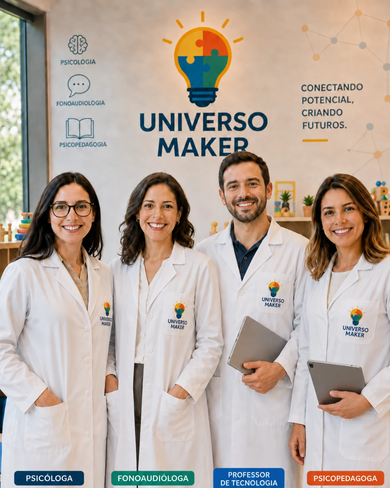
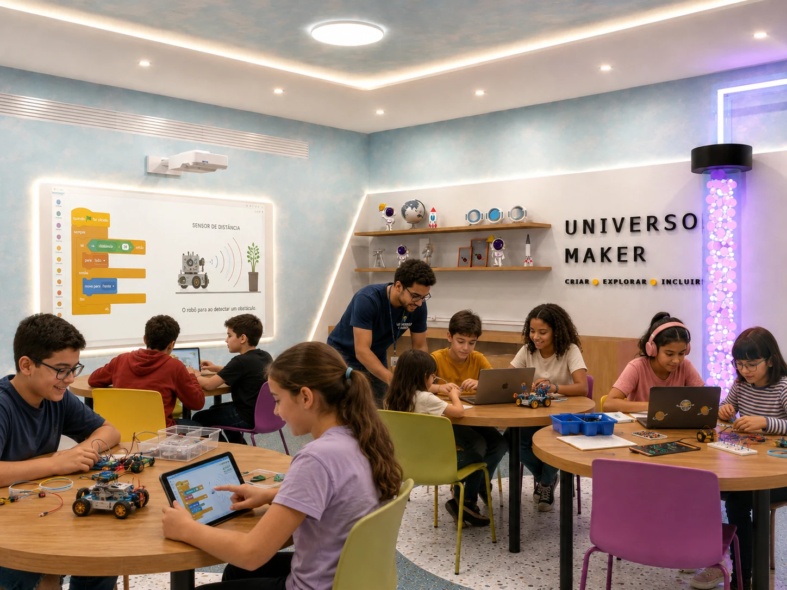
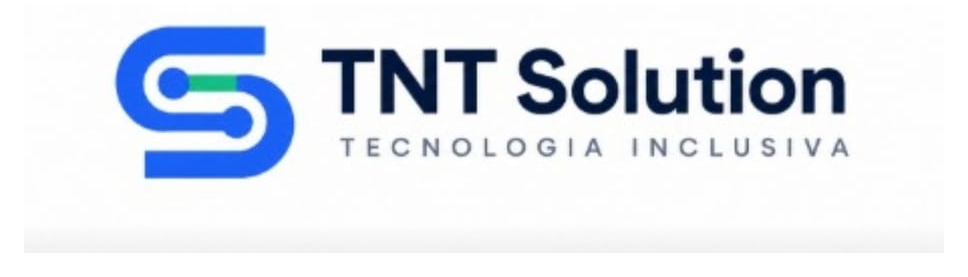

Sala tecnológica inclusiva
Ambiente acessível, acolhedor e preparado para experiências colaborativas.
Tecnologia inclusiva para transformar a educação
O Universo Maker integra robótica, programação, cultura maker, acompanhamento multidisciplinar e tecnologia educacional para promover aprendizagem, autonomia e participação.
Conheça o Universo Maker
Mais do que uma sala de tecnologia, o Universo Maker conecta experiências práticas, acompanhamento especializado e gestão digital. Cada atividade respeita o perfil, as potencialidades, as necessidades e o ritmo de aprendizagem de cada aluno.
Ambiente acessível, acolhedor e preparado para experiências colaborativas.
Robótica, programação, criatividade e aprendizagem ativa com objetivos individualizados.
PEI, registros de evolução, relatórios, trilhas e comunicação com as famílias.
Psicólogo, fonoaudiólogo, psicopedagogo e professor de tecnologia acompanham as experiências, observam o desenvolvimento e apoiam o PEI.
Estrutura pensada para incluir
Conheça diferentes perspectivas do ambiente, das áreas colaborativas ao espaço de regulação sensorial, com recursos tecnológicos de última geração para robótica, programação, projeção interativa e prototipagem.
Jornada de atendimento
Uma experiência organizada do acolhimento inicial ao acompanhamento dos resultados.
Identificação do perfil, das necessidades, das potencialidades e dos interesses do aluno.
Definição de objetivos educacionais, tecnológicos e de desenvolvimento.
Robótica, programação, criatividade, montagem de protótipos e resolução de problemas.
Psicólogo, fonoaudiólogo, psicopedagogo e professor de tecnologia acompanham participação, comunicação, autonomia, aprendizagem e competências digitais.
Observações e intervenções são registradas como evidências para apoiar o Plano Educacional Individualizado.
Informações organizadas para profissionais, instituições e famílias, conforme as permissões aplicáveis.
MIMCA
Princípios educacionais e terapêuticos conectados para gerar experiências significativas.
Aprender por meio da construção, da experimentação e da descoberta.
Desenvolvimento do pensamento lógico e da resolução de problemas.
Projetos práticos com sensores, motores, estruturas e automação.
Participação, pertencimento e oportunidades reais de aprendizagem.
Atividades adaptadas aos objetivos e ao ritmo de cada estudante.
Escolha, iniciativa, colaboração e desenvolvimento socioemocional.
Observações técnicas realizadas durante experiências reais de aprendizagem.
Registros seguros para apoiar objetivos, estratégias e acompanhamento individualizado.

Equipe multidisciplinar
O Universo Maker oferece uma equipe composta por psicólogo, fonoaudiólogo, psicopedagogo e professor de tecnologia. Esses profissionais atuam de forma integrada durante as atividades de robótica, programação e cultura maker, realizando orientações, observações e intervenções individualizadas sem limitar a autonomia dos alunos.
Observa comportamento, interação social, participação, regulação emocional, autonomia e resolução de desafios.
Acompanha comunicação, linguagem, compreensão de orientações, expressão de ideias e participação colaborativa.
Analisa aprendizagem, atenção, organização, estratégias, raciocínio lógico e necessidades de adaptação pedagógica.
Planeja e conduz atividades de programação, robótica, cultura maker e prototipagem; adapta recursos tecnológicos, estimula raciocínio lógico, criatividade, colaboração e autonomia digital; e compartilha evidências pedagógicas com a equipe para apoiar o PEI.
As informações registradas durante as atividades são utilizadas como evidências para apoiar a elaboração, a atualização e o acompanhamento do Plano Educacional Individualizado, sempre com supervisão humana, segurança e respeito às atribuições profissionais.
Público atendido
O projeto atende crianças e adolescentes de 6 a 18 anos, respeitando identidades, singularidades e diferentes formas de aprender e participar.

Tecnologia e neurodivergência
O ensino de programação, robótica e cultura maker oferece experiências concretas, visuais e progressivas, favorecendo diferentes formas de aprender. As atividades são planejadas para transformar interesses em competências, respeitando o ritmo e as potencialidades de cada estudante.
Sequências, planejamento, atenção, organização e solução de problemas são estimulados em desafios práticos.
Projetos em grupo criam oportunidades estruturadas para expressar ideias, negociar etapas e compartilhar conquistas.
Construir, testar, corrigir e concluir projetos fortalece iniciativa, persistência e percepção de competência.
A tecnologia permite criar soluções, protótipos e narrativas, valorizando interesses específicos e diferentes formas de expressão.
Competências digitais, pensamento computacional e familiaridade com tecnologias atuais ampliam perspectivas educacionais e profissionais.
Recursos visuais, interativos e adaptáveis ajudam a ajustar níveis de desafio, tempo, suporte e forma de participação.
Estrutura tecnológica
A sala maker será equipada com recursos tecnológicos de última geração, selecionados para oferecer experiências acessíveis, seguras, interativas e alinhadas às competências digitais do futuro.
Kits educacionais modernos, sensores de precisão, motores, controladores e placas programáveis.
Notebooks e tablets modernos, com ambientes visuais de programação e aplicações educacionais.
Projeção interativa de última geração e recursos audiovisuais para experiências colaborativas.
Impressão, prototipagem digital e recursos de impressão 3D para transformar ideias em projetos.
Ambiente integrado com iluminação suave e recursos táteis.
Internet de alta velocidade, rede estruturada, automação e integração com a plataforma digital.
Desenvolvida pela TNT Solution, a plataforma conecta profissionais, instituições e famílias, reunindo registros de observações, intervenções, PEI, evolução e comunicação com segurança e rastreabilidade.
Conhecer a solução digitalObjetivos, estratégias, evidências, atualizações e acompanhamento individualizado.
Registros realizados pela equipe multidisciplinar durante as experiências maker.
Histórico da participação, comunicação, autonomia, aprendizagem e desenvolvimento.
Atividades organizadas por competências, perfis, interesses e objetivos.
Informações para apoiar a equipe, a instituição e a comunicação com responsáveis.
Controle de acesso, proteção de dados e recursos de inteligência artificial com supervisão humana.
Base legal e políticas públicas
O Universo Maker transforma princípios legais de educação inclusiva, acessibilidade, proteção de direitos e formação tecnológica em experiências pedagógicas, acompanhamento especializado e oportunidades reais de participação para crianças e adolescentes neurodivergentes.
Assegura educação inclusiva, acessibilidade, participação e desenvolvimento das potencialidades da pessoa com deficiência.
Consultar legislação Lei nº 12.764/2012Institui a Política Nacional de Proteção dos Direitos da Pessoa com Transtorno do Espectro Autista.
Consultar legislação Decreto nº 8.368/2014Regulamenta a Lei Berenice Piana e reforça o direito da pessoa autista à educação em sistema inclusivo.
Consultar legislação Lei nº 9.394/1996Prevê a educação especial e os serviços de apoio especializado necessários à escolarização inclusiva.
Consultar legislação Decreto nº 12.686/2025Institui a PNEEI e a Rede Nacional de Educação Especial Inclusiva, com foco em acesso, permanência, participação e aprendizagem.
Consultar legislação Lei nº 14.533/2023Estimula inclusão digital, competências tecnológicas, pensamento computacional e acesso à educação digital.
Consultar legislação Decreto nº 10.645/2021Orienta o acesso e o desenvolvimento de recursos tecnológicos voltados à autonomia, inclusão e participação.
Consultar legislação Portaria MEC nº 421/2026Dispõe sobre a política e a rede nacionais de educação especial inclusiva, fortalecendo ações de acessibilidade e apoio educacional.
Consultar legislaçãoO Universo Maker está alinhado às diretrizes da legislação brasileira de educação inclusiva, acessibilidade, proteção da pessoa com deficiência e educação digital. A aplicação de cada norma deve considerar o contexto da instituição contratante e a orientação de seus responsáveis técnicos e jurídicos.
Parcerias estratégicas
Empresas reconhecidas fortalecem a infraestrutura, as experiências educacionais e a capacidade de expansão do projeto.
Tecnologia em nuvem, inovação e escalabilidade
Por meio do ecossistema Microsoft for Startups, o Universo Maker utiliza recursos do Microsoft Azure para apoiar a hospedagem, a proteção, o monitoramento e a evolução da plataforma digital.
Tecnologia educacional e experiências interativas
A parceria com a EPSON fortalece as aulas de programação, robótica e cultura maker por meio de projeção interativa, impressão e recursos visuais aplicados à aprendizagem.

Tecnologia inclusiva e propriedade intelectual
A TNT Solution desenvolve a metodologia, a plataforma digital e as soluções tecnológicas que estruturam o Universo Maker.
As marcas dos parceiros devem ser utilizadas conforme os materiais e as autorizações institucionais aplicáveis.
Modelo escalável
Uma estrutura modular, adaptável a diferentes instituições, municípios e contextos educacionais.
Benefícios
O projeto cria condições para que os estudantes participem, se expressem, experimentem e desenvolvam competências relevantes para a vida escolar, social e profissional.
Próximo passo
Conheça uma solução completa que conecta educação inclusiva, tecnologia, acompanhamento multidisciplinar e gestão digital.
Contato institucional
Envie as informações da sua instituição. A equipe poderá compreender o cenário e apresentar as possibilidades do projeto.